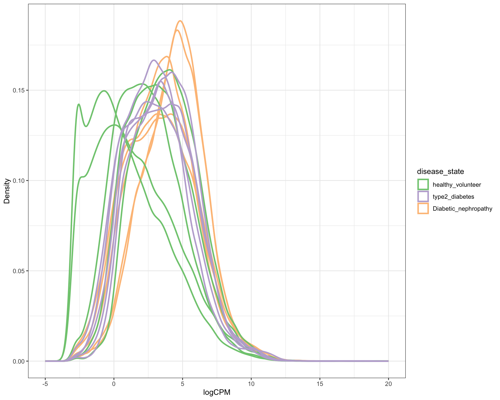
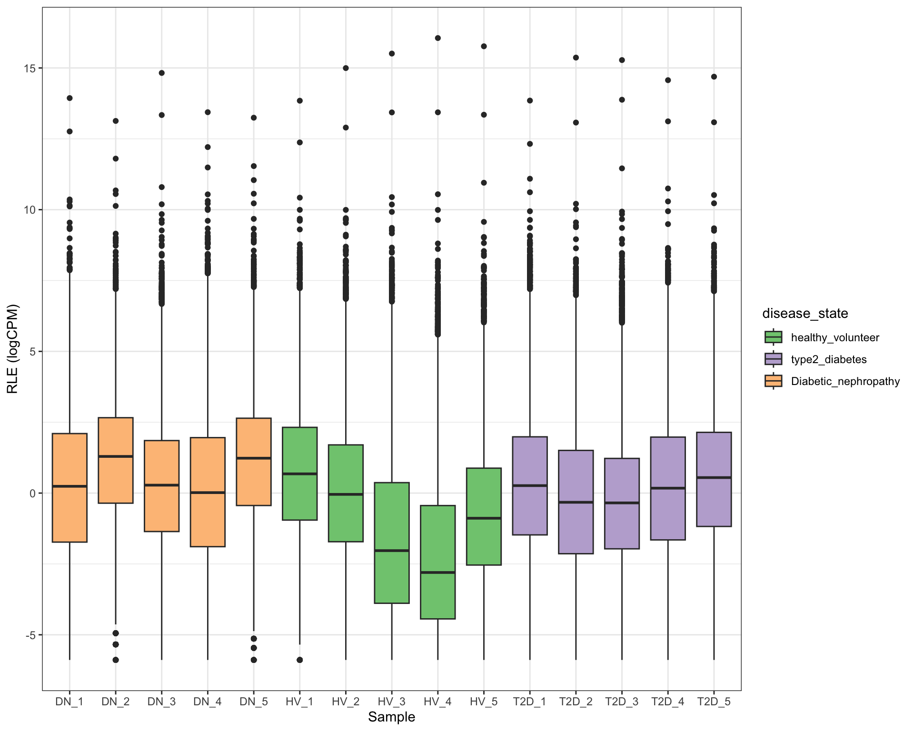
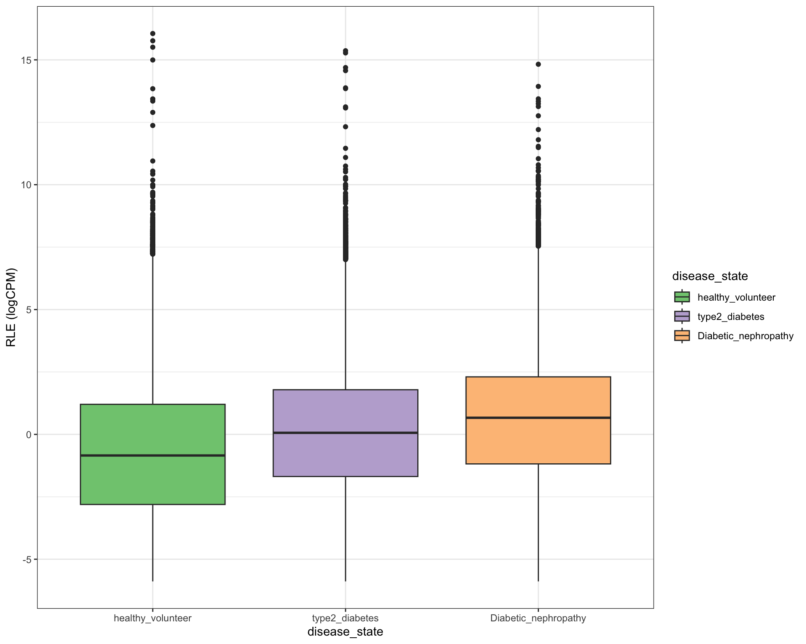
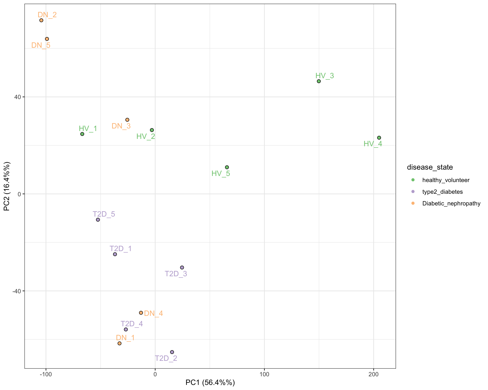
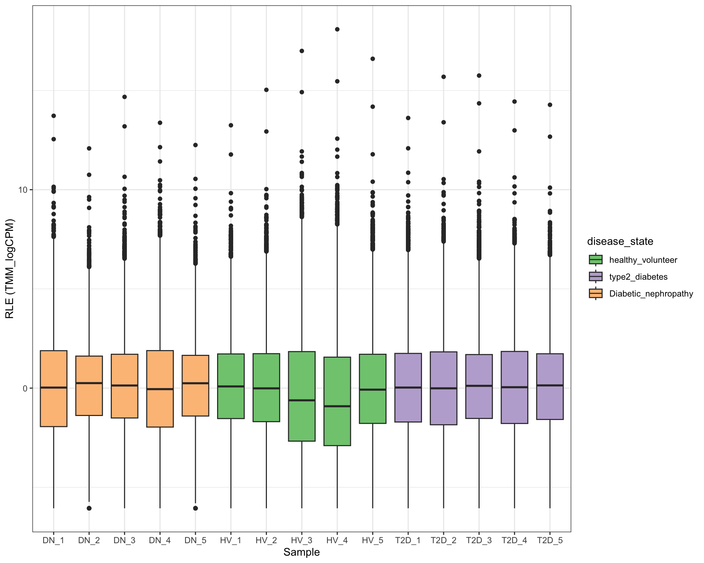
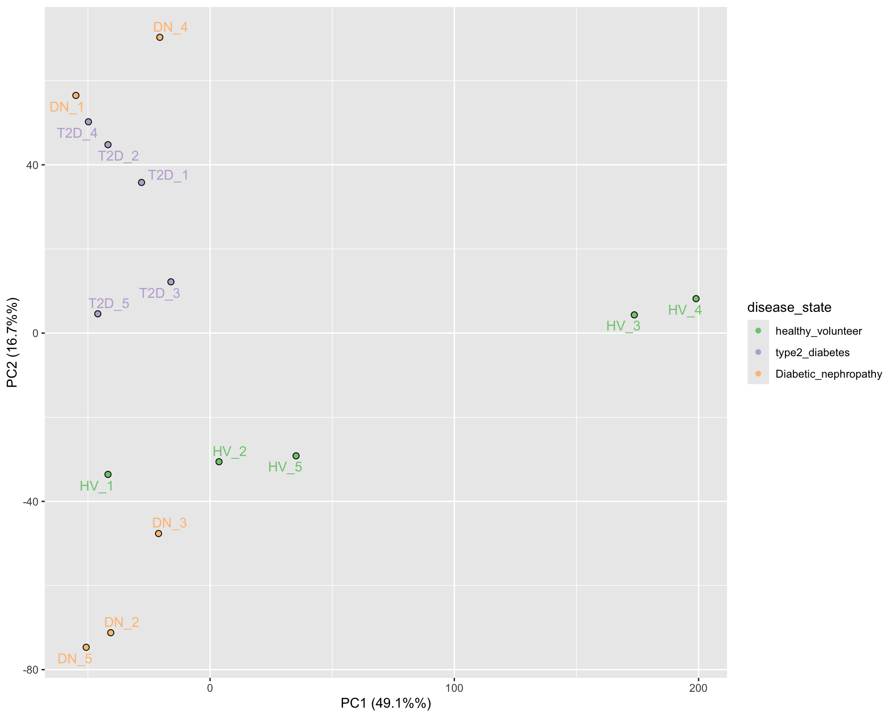

library(tidyverse)
library(extraChIPs)
library(edgeR)
library(magrittr)
library(patchwork)
library(limma)
library(here)
library(rtracklayer)
library(plyranges)Raw count data was obtained from ‘GSE154881’. This data contains 15 samples from 3 disease states, healthy, type 2 Diabetic and Diabetic Nephropathy. Methodological information can be found at the GEO site, however, of note a RIN score of >5 was used as the threshold for RNA quality, this is rather low and may reflect downstream QC decisions.
# create a count matrix
count_matrix <- read_tsv(here::here("data/raw/GSE154881_All_blood.txt")) %>%
dplyr::filter(str_starts(Geneid, "ENSG")) %>% #keep all rows in GeneID column which start with "ENSG"
as.data.frame() %>% # convert to data frame
column_to_rownames("Geneid") %>% # convert "GeneID" to rownames
as.matrix() # convert to matrix.
keep <- rowSums(count_matrix, na.rm = TRUE) > 0 & !is.na(rowSums(count_matrix)) # keep counts which are greater than 0 and not NA.
head(count_matrix[keep,])## T2D_1 T2D_2 T2D_3 T2D_4 T2D_5 DN_1 DN_2 DN_3 DN_4 DN_5 HV_1
## ENSG00000223972.5 2 5 11 10 7 3 17 8 10 36 1
## ENSG00000227232.5 99 67 33 49 61 86 29 13 65 27 43
## ENSG00000278267.1 0 0 1 1 8 0 6 0 1 4 2
## ENSG00000243485.5 0 0 0 0 0 0 1 0 0 0 0
## ENSG00000238009.6 0 1 0 0 0 3 1 3 0 2 6
## ENSG00000233750.3 48 19 21 16 3 18 4 12 20 19 54
## HV_2 HV_3 HV_4 HV_5
## ENSG00000223972.5 8 17 6 22
## ENSG00000227232.5 11 10 5 8
## ENSG00000278267.1 2 0 1 0
## ENSG00000243485.5 0 0 0 0
## ENSG00000238009.6 0 0 0 0
## ENSG00000233750.3 19 7 1 3Following download of data, an initial parameter was set to only keep transcripts whose counts were greater than 0. A count matrix with 15 samples and 60669 alignments was saved locally.
Meta data was also extracted and saved locally
#create a metadata table
GSE154881_metaData <- tibble(
sampleName = colnames(count_matrix)
) %>%
mutate(
disease_state = case_when(
#make treatment "healthy_volunteer" if contains hv
grepl("HV", sampleName) ~ "healthy_volunteer",
#make treatment "Diabetic_nephropathy" if contains dn
grepl("DN", sampleName) ~ "Diabetic_nephropathy",
#make treatment "type2_diabetes" if contains dn
grepl("T2D", sampleName) ~ "type2_diabetes"
) %>%
factor(levels = c("healthy_volunteer", "type2_diabetes", "Diabetic_nephropathy"))
)
head(GSE154881_metaData)## # A tibble: 6 × 2
## sampleName disease_state
## <chr> <fct>
## 1 T2D_1 type2_diabetes
## 2 T2D_2 type2_diabetes
## 3 T2D_3 type2_diabetes
## 4 T2D_4 type2_diabetes
## 5 T2D_5 type2_diabetes
## 6 DN_1 Diabetic_nephropathyDespite the methods stating that raw counts were calculated using a GTF file from GENCODEv23, debugging revealed that this was an error and should have been GENCODEv34. Exon gene lengths were then calculated by merging exon ranges which overlap and finding the total exon length. This was performed for use in downstream analysis.
GencodeV34 <- import.gff(here::here("data/raw/gencode.v34.chr_patch_hapl_scaff.annotation.gtf"))
gene_lengths <- GencodeV34 %>%
subset(type == "exon") %>% # keep only exons
split(.$gene_id) %>% # similar to "group_by" in tidyverse
reduce() %>% # merges exon ranges that fall within others. eg. 2:5 and 1:7 becomes 1:7
width() %>% # calculate the length of the each of ranges
map_int(sum) # calculates the total exon length
gene_lengths[1:10]## ENSG00000000003.15 ENSG00000000005.6 ENSG00000000419.12 ENSG00000000457.14
## 4536 1476 1207 6883
## ENSG00000000460.17 ENSG00000000938.13 ENSG00000000971.16 ENSG00000001036.14
## 5970 3382 7980 2822
## ENSG00000001084.13 ENSG00000001167.14
## 8618 3811the data described thus far was compiled into a summarized experiment (SE) object for ease of handling. Metadata was assigned to the colData element of the the SE object and gene annotations assigned to the RowRanges obejct. LogCPM were calculated and assinged to a new Assay within the SE object. A detection parameter was also added where CPM values aught to be greater than 1 and the row total > 5
se <- SummarizedExperiment( # create a summarisedExperiment object
assays = list(counts = count_matrix[keep,]), # add the countmatrix as an assay
colData = GSE154881_metaData # add the metadata
)
# add gene annotations to SE object
rowRanges(se) <- GencodeV34 %>%
subset(type == "gene") %>% #keep only genes
select(starts_with("gene")) %>% #keep only the columns which starts with "gene"
mutate(gene_length = gene_lengths[gene_id]) %>% #create a new columns called gene_length using the vector from gene_lengths
setNames(nm = mcols(.)$gene_id) %>% #set name using the column names from gene_id in gencodeV34
.[rownames(se)] #reorder the GencodeV34 to match rownames in se
#add a logCPM column to the assay
assay(se, "logCPM") <- cpm(se, log = TRUE)
# create a columns within rowData of se called detected where all values must be greater than 1 and the row sum must be greater than or equal to 5
rowData(se)$detected <- se %>%
cpm() %>%
is_greater_than(1) %>%
rowSums() %>%
is_weakly_greater_than(5)
glimpse(se)## Formal class 'RangedSummarizedExperiment' [package "SummarizedExperiment"] with 6 slots
## ..@ rowRanges :Formal class 'GRanges' [package "GenomicRanges"] with 7 slots
## ..@ colData :Formal class 'DFrame' [package "S4Vectors"] with 6 slots
## ..@ assays :Formal class 'SimpleAssays' [package "SummarizedExperiment"] with 1 slot
## ..@ NAMES : NULL
## ..@ elementMetadata:Formal class 'DFrame' [package "S4Vectors"] with 6 slots
## ..@ metadata : list()Log CPM was then plotted using ‘ExtrChIps’ to observe variation
between donors and disease states. First we utilized
plotAssayDensities to visualize the kernel density
estimates - in essence this provides a smoothed histogram. Here we would
expect each sample to exhibit a similar distribution of read counts.
library(RColorBrewer)
se %>%
subset(detected) %>%
plotAssayDensities(assay = "logCPM", colour = "disease_state", size = 1) +
theme_bw() +
xlim(c(-5, 20)) +
scale_colour_brewer(palette = "Accent")
From this density plot it appears that there are two samples from the “healthy_volunteer” cohort which appear to have a negatively skewed LogCPM, i.e. a high frequency of low counts. To further interrogate this we next plotted the relative log expression (RLE). This performs a Log1p transformation of the data and presents the results as a boxplot, allowing for visualization of variance.
se %>%
subset(detected) %>%
plotAssayRle(assay = "logCPM", fill = "disease_state") +
theme_bw() +
scale_fill_brewer(palette = "Accent")
se %>%
subset(detected) %>%
plotAssayRle(assay = "logCPM", fill = "disease_state", by_x = "disease_state") +
theme_bw() +
scale_fill_brewer(palette = "Accent") These plots illustrate the variance within these data, in particular, highlighting samples 3 and 4 from the healthy volunteer cohort (HV_3, HV_4) as exhibiting substantial variance.
To gain further insight into this observed variance, PCA was performed on the LogCPM data to understand the variance which may be contributed by HV_3 and HV_4.
se %>%
subset(detected) %>%
plotAssayPCA(
assay = "logCPM",
colour = "disease_state", label = "sample",
pc_x = 1, pc_y = 2
) +
geom_point(shape = 1,size = 2,colour = "black") +
theme_bw() +
scale_colour_brewer(palette = "Accent") Here we observed that HV_3 and HV_4 segregate along PC1, the component which explains 56% of the variance in the data. This indicates that the these samples contribute the most to the observed variance in the data.
Collectively these analysis provide a sound indication that these samples may not be an accurate representation of the healthy volunteer sample and therefor population. Although challenging to definitively determine why this may be, the low RIN threshold may explain these low counts.
Next we explored whether this observed variance could be mitigated by TMM normalization.
se_detected <- subset(se, detected)
assay(se_detected, "TMM_logCPM") <- se_detected %>%
calcNormFactors("TMM") %>%
cpm(log = TRUE)
se_detected %>%
plotAssayRle(assay = "TMM_logCPM", fill = "disease_state") +
theme_bw() +
scale_fill_brewer(palette = "Accent")
se_detected %>%
plotAssayPCA(assay = "TMM_logCPM",
colour = "disease_state",
label = "sampleName",
pc_x = 1,
pc_y = 2) +
scale_colour_brewer(palette = "Accent") +
geom_point(shape = 1,size = 2,colour = "black")
RLE plot reveals that HV_3 and HV_4 still exhibit relative large variance (indicated by their mean deviating from 0) Similarly PCA reveals these two samples still contribute to variance in the data, even after normalization.
Ultimately this has led to the descion to exclude these two sample from further analysis.
se_detected <- subset(se, detected)
SE_outlier_removed <- se_detected[, !se_detected$sampleName %in% c("HV_3", "HV_4")]